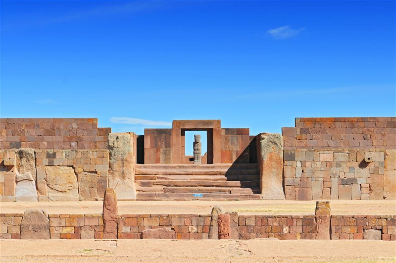
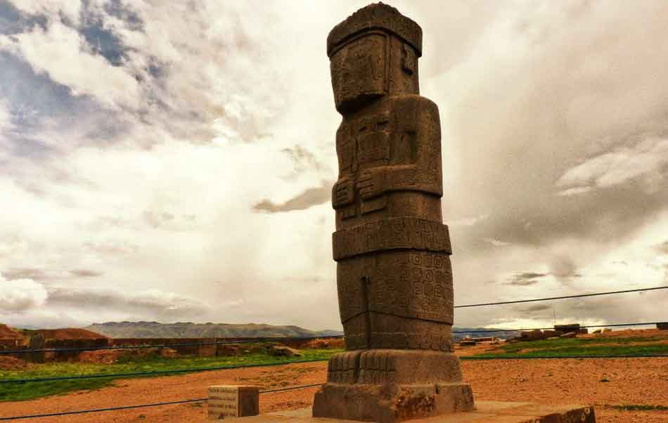
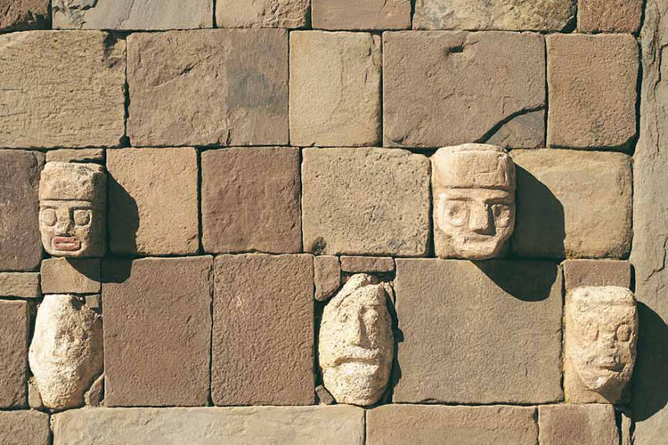
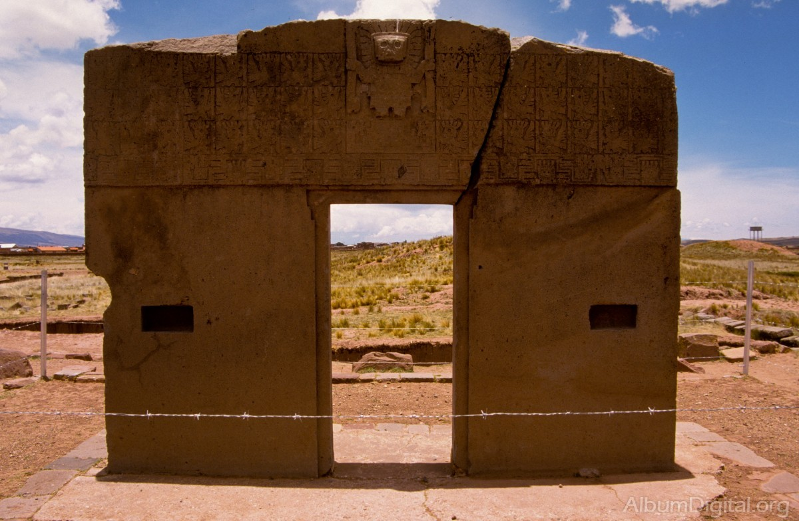

-

Adentrate en conocer la historia de la TiwanaKota
Los TiwanaKotas son una cultura que estaba ubuicada cerca del lago TitiCaca en La Paz........
-

Adentrate en conocer las estructuras arquitectonicas de Tiwanaku
Las estructuras TiwanaKotas son una de las mas misteriosas sobre la tierra donde cada estructura tiene un sifnificado.......
-

Adentrate en conocer sobre las leyendas de Tiwanaku
Los TiwanaKotas son una de las culturas mas ricas en leyendas que rodean su historia de origen y otros...........
-

Adentrate en las teorias que rodean a Tiwanaku
Las teorias sobre visitas extraterrestes son una de las mas llamativas sobre la cultura TiwanaKota, pero existen otras.....